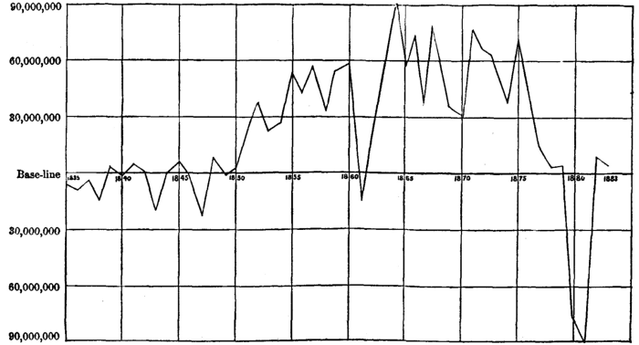

Chapter 31: Of Money Considered As An Imported Commodity¶
31.1 § 1. Money imported on two modes; as a Commodity, and as a medium of Exchange¶
The degree of progress which we have now made in the theory of foreign trade puts it in our power to supply what was previously deficient in our view of the theory of money; and this, when completed, will in its turn enable us to conclude the subject of foreign trade.
Money, or the material of which it is composed, is, in Great Britain, and in most other countries, a foreign commodity. Its value and distribution must therefore be regulated, not by the law of value which obtains in adjacent places, but by that which is applicable to imported commodities—the law of international values.
In the discussion into which we are now about to enter, I shall use the terms money and the precious metals indiscriminately. This may be done without leading to any error; it having been shown that the value of money, when it consists of the precious metals, or of a paper currency convertible into them on demand, is entirely governed by the value of the metals themselves: from which it never permanently differs, except by the expense of coinage, when this is paid by the individual and not by the state.
Money is brought into a country in two different ways. It is imported (chiefly in the form of bullion) like any other merchandise, as being an advantageous article of commerce. It is also imported in its other character of a medium of exchange, to pay some debt due to the country, either for goods exported or on any other account. The existence of these two distinct modes in which money flows into a country, while other commodities are habitually introduced only in the first of these modes, occasions somewhat more of complexity and obscurity than exists in the case of other commodities, and for this reason only is any special and minute exposition necessary.
31.2 § 2. As a commodity, it obeys the same laws of Value as other imported Commodities¶
In so far as the precious metals are imported in the ordinary way of commerce, their value must depend on the same causes, and conform to the same laws, as the value of any other foreign production. It is in this mode chiefly that gold and silver diffuse themselves from the mining countries into all other parts of the commercial world. They are the staple commodities of those countries, or at least are among their great articles of regular export; and are shipped on speculation, in the same manner as other exportable commodities. The quantity, therefore, which a country (say England) will give of its own produce, for a certain quantity of bullion, will depend, if we suppose only two countries and two commodities, upon the demand in England for bullion, compared with the demand in the mining country (which we will call the United States1) for what England has to give.
The bullion required by England must exactly pay for the cottons or other English commodities required by the United States. If, however, we substitute for this simplicity the degree of complication which really exists, the equation of international demand must be established not between the bullion wanted in England and the cottons or broadcloth wanted in the United States, but between the whole of the imports of England and the whole of her exports. The demand in foreign countries for English products must be brought into equilibrium with the demand in England for the products of foreign countries; and all foreign commodities, bullion among the rest, must be exchanged against English products in such proportions as will, by the effect they produce on the demand, establish this equilibrium.
There is nothing in the peculiar nature or uses of the precious metals which should make them an exception to the general principles of demand. So far as they are wanted for purposes of luxury or the arts, the demand increases with the cheapness, in the same irregular way as the demand for any other commodity. So far as they are required for money, the demand increases with the cheapness in a perfectly regular way, the quantity needed being always in inverse proportion to the value. This is the only real difference, in respect to demand, between money and other things.
Money, then, if imported solely as a merchandise, will, like other imported commodities, be of lowest value in the countries for whose exports there is the greatest foreign demand, and which have themselves the least demand for foreign commodities. To these two circumstances it is, however, necessary to add two others, which produce their effect through cost of carriage. The cost of obtaining bullion is compounded of two elements; the goods given to purchase it and the expense of transport; of which last, the bullion countries will bear a part (though an uncertain part) in the adjustment of international values. The expense of transport is partly that of carrying the goods to the bullion countries, and partly that of bringing back the bullion; both these items are influenced by the distance from the mines; and the former is also much affected by the bulkiness of the goods. Countries whose exportable produce consists of the finer manufactures obtain bullion, as well as all other foreign articles, cæteris paribus, at less expense than countries which export nothing but bulky raw produce.
To be quite accurate, therefore, we must say: The countries whose exportable productions (1) are most in demand abroad, and (2) contain greatest value in smallest bulk, (3) which are nearest to the mines, and (4) which have least demand for foreign productions, are those in which money will be of lowest value, or, in other words, in which prices will habitually range the highest. If we are speaking not of the value of money, but of its cost (that is, the quantity of the country's labor which must be expended to obtain it), we must add (5) to these four conditions of cheapness a fifth condition, namely, “whose productive industry is the most efficient.” This last, however, does not at all affect the value of money, estimated in commodities; it affects the general abundance and facility with which all things, money and commodities together, can be obtained.2
The accompanying Chart, No. XIV, on the next page, gives the excess of exports from the United States of gold and silver coin and bullion over imports, and the excess of imports over exports. The movement of the line above the horizontal baseline shows distinctly how largely we have been sending the precious metals abroad from our mines, simply as a regular article of export, like merchandise. From 1850 to 1879 the exports are clearly not in the nature of payments for trade balances; since it indicates a steady movement out of the country (with the exception of the first year of the war, when gold came to this country). The phenomenal increase of specie exports during the war, and until 1879, was due to the fact that we had a depreciated paper currency, which sent the metals out of the country as merchandise. This chart should be studied in connection with Chart No. XIII.

From the preceding considerations, it appears that those are greatly in error who contend that the value of money, in countries where it is an imported commodity, must be entirely regulated by its value in the countries which produce it; and can not be raised or lowered in any permanent manner unless some change has taken place in the cost of production at the mines. On the contrary, any circumstance which disturbs the equation of international demand with respect to a particular country not only may, but must, affect the value of money in that country—its value at the mines remaining the same. The opening of a new branch of export trade from England; an increase in the foreign demand for English products, either by the natural course of events or by the abrogation of duties; a check to the demand in England for foreign commodities, by the laying on of import duties in England or of export duties elsewhere; these and all other events of similar tendency would make the imports of England (bullion and other things taken together) no longer an equivalent for the exports; and the countries which take her exports would be obliged to offer their commodities, and bullion among the rest, on cheaper terms, in order to re-establish the equation of demand; and thus England would obtain money cheaper, and would acquire a generally higher range of prices. A country which, from any of the causes mentioned, gets money cheaper, obtains all its other imports cheaper likewise.
It is by no means necessary that the increased demand for English commodities, which enables England to supply herself with bullion at a cheaper rate, should be a demand in the mining countries. England might export nothing whatever to those countries, and yet might be the country which obtained bullion from them on the lowest terms, provided there were a sufficient intensity of demand in other foreign countries for English goods, which would be paid for circuitously, with gold and silver from the mining countries. The whole of its exports are what a country exchanges against the whole of its imports, and not its exports and imports to and from any one country.